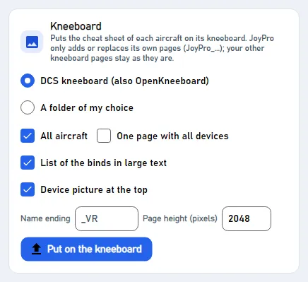

#Acest dispozitiv folosește un stil propriu
Casetă de bifareredactatDă dispozitivului afișat un stil propriu: culorile, fontul și marcajele fișei lui de referință.
Este salvat cu fișa dispozitivului și îl însoțește la „Partajați macheta...”.
Pagina Machetă arată o imagine a fiecăruia dintre dispozitivele dvs., cu ce face fiecare buton, Hat și axă. Are două secțiuni, comutate în partea de sus: Imagini ale dispozitivelor (câte un dispozitiv: vizualizați, corectați marcajele, asociați pe imagine) și Fișe de referință (imagini de tipărit ale tuturor dispozitivelor dvs., pentru fiecare aeronavă). Nimic de pe această pagină nu modifică un joc, cu excepția unei asocieri făcute în modul Asociere, care intră în profilul dvs. ca orice altă asociere.


Ce unde este? deschide o fereastră cu toate dispozitivele dvs. Lângă fiecare control scrie ce face acel control în jocul dvs. O găsiți în dreapta sus pe această pagină, pe pagina Start și în meniul din zona de notificare.
Urmați jocul comută la jocul pe care îl jucați și, în DCS, la aeronava pe care o zburați. Mai multe: Ce unde este? Vedeți ce face fiecare buton.


JoyPro poate pune o pagină cu asocierile dvs. pe kneeboard-ul fiecărei aeronave DCS. O citiți direct în cabină.
Ați schimbat un buton? Apăsați din nou Puneți pe kneeboard: JoyPro își înlocuiește propriile pagini. Celelalte pagini ale kneeboard-ului dvs. rămân. Mai multe: Vedeți asocierile mele pe kneeboard-ul DCS.



Imagini ale dispozitivelor dvs. cu fiecare asociere scrisă lângă butoane, de tipărit sau de ținut pe un al doilea ecran. Bifați dispozitivele, jocurile și aeronavele, alegeți Prezentare generală per dispozitiv și/sau Una per aeronavă, apăsați Creați fișe de referință. Imaginile (PNG) ajung în folderul de ieșire; previzualizarea le afișează.


O fișă de referință arată ce fac butoanele într-o aeronavă, cu numele proprii ale comenzilor din acel joc când îl alegeți în caseta de previzualizare. O asociere făcută în modul Asociere este scrisă în joc la următorul export, ca o asociere înregistrată pe pagina Asocieri.
Banda de imagini de deasupra suprafeței de lucru are câte un buton pentru fiecare imagine a dispozitivului. Caseta de lângă butonul 3D alege stilul desenului: Linii sau culori plate sub contururi groase (culorile în Setări > Desene). Dispozitivele cu model 3D primesc Vizualizare 3D: trageți pentru a roti, rotița mărește, un dublu clic resetează. Desenul plat este cel pe care îl tipăresc fișele de referință și pe care lucrează modul Editare.
JoyPro identifică un dispozitiv după ID-ul USB, numele și intrările pe care le raportează, comparându-le cu un catalog de câteva sute de modele. Când nu își poate da seama (o bază cu mânere interschimbabile, un singur ID USB pentru mai multe produse, un dispozitiv necunoscut), întreabă deasupra imaginii: Care este? cu dale ale candidaților, Cel mai probabil primul, Păstrați cel mai probabil, Nelistat: căutați în catalog, Nu acum. Pentru un dispozitiv necunoscut alegeți și tipul lui. Model... > Alegeți alt model... întreabă din nou oricând.
Când imaginea afișată nu cunoaște nicio poziție a unei părți („Încă fără poziții pe această imagine”), asistentul pentru marcaje le plasează într-un minut:
Fără dispozitivul la îndemână, Plasați acum: X numește următoarea intrare; un clic o pune acolo, Mai târziu o cere după celelalte, iar intrările fără loc sunt etichete pe care le puteți trage pe imagine. Anulați revocă ultima plasare; Săriți trece la următoarea intrare; Opriți face o pauză. Mai multe conține Axă, Opriți, Adăugați element de comandă (un element pe care JoyPro nu îl cunoaște: buton, comutator, hat, mini-stick, encoder, axă) și Eliminați de pe imagine.


Mai multe > Puncte găsite (experimental) desenează inele subțiri întrerupte pe punctele unei fotografii care arată ca butoane, hat-uri sau comutatoare. Un clic (sau o etichetă lăsată) lângă un inel pune marcajul în centrul inelului. JoyPro nu știe ce intrare este un punct, deci nu plasează nimic singur; funcționează pe fotografii, nu pe desenele JoyPro, și rulează offline.
Pe o imagine cu poziții cunoscute, Tabele (bara de instrumente) desenează aspectul fișei de referință din JoyPro 1: câte un tabel pentru fiecare grup de comenzi în jurul imaginii, linii spre părți, relația asociată pe fiecare rând și asocierea cu modificator într-o a doua coloană. Caseta de previzualizare alege ce arată rândurile: Nume de relații sau un joc și o aeronavă, cu titlurile din meniul propriu al acelui joc. În modul Editare trageți un tabel (devine fixat), marginea lui dreaptă, un segment de linie sau un punct; panoul lateral are Coloană de modificator, Rând + / Rând −, Fixat, Redirecționați linia, Eliminați linia, Despărțiți în tabele individuale, Grupați din nou, Aranjare automată și Resetați. O relație trasă din Trageți o relație pe un rând și lăsată pe un rând este asociată acolo.


Mai multe vizualizări pune mai multe imagini ale unui dispozitiv pe o pagină (față și lateral, ca fiecare buton să fie acoperit): Adăugați vizualizare, Imagine proprie..., Aranjați, Editați această vizualizare, Eliminați vizualizarea, Eliminați pagina, Înapoi la o singură imagine. Formatul paginii este A4 sau Letter pentru tipărire, 16:9 / 21:9 / 32:9 pentru un ecran. Fișele de referință tipăresc pagina.
Când o intrare lipsește sau este în locul greșit, corectați-o în modul Editare (trageți, Adăugați element de comandă, Eliminați de pe imagine, redenumiți în legendă). Totul este păstrat pe acest PC ca stratul dumneavoastră peste datele JoyPro. Trimiteți corecția către JoyPro... salvează modificarea ca fișier mic și deschide pe GitHub un formular de issue precompletat; acolo decideți dacă îl trimiteți. Model... > Resetați la valorile implicite JoyPro... elimină toate modificările dumneavoastră pentru un dispozitiv (întreabă mai întâi; Anulați resetarea le pune înapoi).
V / E / B moduri, N plasează marcaj (fișier de machetă), Del elimină, Ctrl+Z / Ctrl+Y anulează și refac, Ctrl+S salvează, + / - zoom, 0 sau F potrivește în fereastră, săgețile deplasează puțin în modul Editare (Shift: 10 px), Alt trage fără aliniere automată, un fișier de imagine lăsat aici devine fotografia dumneavoastră a dispozitivului.
flowchart TD D["Dispozitiv<br/>(ID USB, nume, intrări)"] --> I["DeviceIdentifier<br/>+ catalogul de dispozitive"] I --> R["Referința dispozitivului:<br/>model, părți, imagini"] R --> C["DeviceMarkerCanvas<br/>(Vizualizare / Editare / Asociere)"] P["Asocierile profilului<br/>(binds list)"] --> C C --> B["binds set"] R --> S["Fișă cu explicații:<br/>tabele și linii"] S --> L["layout render:<br/>un PNG pentru fiecare<br/>dispozitiv și aeronavă"] S --> K["layout kneeboard:<br/>DCS Kneeboard sau<br/>OpenKneeboard"]
MainWindowViewModel.LayoutWorkspace.cs (moduri, anulare, asociere și eliberare), LayoutReference.cs (imaginea de referință, salvare, gazda asistentului), LayoutCallouts.cs (tabele și linii), MultiView.cs, CheatSheets.cs, ReferencePhotos.cs, Device3D.cs, DeviceIcons.cs, ModelChoice.cs, LayoutReset.cs, UnmappedPress.cs; DeviceReferenceViewModel*.cs, MarkerAssistantViewModel.cs, SheetStyleViewModel.cs. Suprafața de lucru: Views/Controls/DeviceMarkerCanvas.cs, CalloutSheetCanvas.cs, MultiViewCanvas.cs.<data>\DeviceReference): grips.json (răspunsurile despre model), Layouts\ (pozițiile dumneavoastră pentru fiecare imagine), Callouts\ (tabele și linii), MultiView\, ReferencePhotos\<model>\ (verificate prin SHA-256), Corrections\, ResetBackups\; definițiile dumneavoastră de dispozitive în <data>\Devices. Stilul global al fișelor în sheet-style.json.engine layout suggest (găsește o imagine pentru fiecare dispozitiv, o machetă pe o imagine aleasă de dumneavoastră), engine layout render (fișele de referință), engine layout image (fișierul de machetă folosit de un profil), engine layout template-inspect / engine layout template-save (editorul de fișiere de machetă), engine layout callouts, engine layout multiview, engine layout titles (titlurile din meniul jocului), engine hud devices (modelele dispozitivelor conectate), engine devices reference (identificare, puncte găsite), engine binds list.Documentația funcțiilor din spatele acestei pagini, generată din depozitul de cod:
152 controale, citite din codul sursă al programului: 152 redactate, 0 cu informațiile din sursă (tooltip, comentariu în cod, apel al motorului), 0 încă de extins.
Dă dispozitivului afișat un stil propriu: culorile, fontul și marcajele fișei lui de referință.
Este salvat cu fișa dispozitivului și îl însoțește la „Partajați macheta...”.
Tooltip Preia toate culorile, fontul și desenul presetării
Dă stilului fișei toate culorile, fontul și desenul presetării alese mai sus.
Editorul și fișele de referință îl folosesc imediat; este salvat pe loc.
Tooltip Ștergeți această presetare proprie
Șterge presetarea proprie aleasă. Stilul folosit nu se schimbă.
Tooltip Păstrează acest stil sub acest nume, pentru a-l aplica din nou mai târziu
Păstrează stilul actual al fișei ca presetare, sub numele scris mai sus, pentru a-l aplica din nou mai târziu.
Un nume al presetărilor JoyPro este refuzat; presetarea dvs. cu același nume este înlocuită.
Tooltip Adăugați un modificator și culoarea sa
Adaugă un rând pentru o culoare de modificator. Scrieți modificatorul așa cum îl numesc asocierile dvs.: marcajele lui și bara de deasupra coloanei lui primesc acea culoare.
Elimină această culoare de modificator din stilul fișei; marcajele asocierilor cu acel modificator primesc din nou culoarea tipului lor.
Tooltip Apăsați un buton, mișcați o axă sau un Hat: rândul lui se aprinde și funcția lui apare sus. Citește dispozitivele dvs. doar cât timp această fereastră este deschisă.
Fereastra de machetă, pornit implicit: apăsați un buton, mișcați o axă sau un hat, iar rândul lui se aprinde; funcția lui este numită cu litere mari în partea de sus.
JoyPro citește dispozitivele dvs. doar cât timp fereastra este deschisă și nu este minimizată, iar după un moment fără intrare, doar o dată la 250 ms.
Tooltip Comută la jocul pe care îl jucați și, în DCS, la aeronava pe care o pilotați (necesită hook-ul DCS al JoyPro). Fără el, alegerea dvs. rămâne.
Fereastra de machetă: comută la jocul pe care îl jucați și, în DCS, la aeronava pe care o pilotați.
Fără aceasta, alegerea dvs. rămâne.
Tooltip Recitește asocierile (după ce ați schimbat ceva)
Fereastra de machetă: citește din nou asocierile, de exemplu după ce ați schimbat ceva pe pagina „Asocieri”.
Închide fereastra de machetă. JoyPro reține unde era și ce arăta; data viitoare se deschide acolo.
Dacă rămâne deschisă când JoyPro se închide, revine la următoarea pornire.
Tooltip Fiecare dispozitiv cu ce face fiecare comandă într-un joc și o aeronavă, într-o fereastră proprie (și pentru un al doilea monitor); ce apăsați se aprinde
„Ce unde este?” deschide fereastra de machetă: o fereastră proprie cu fiecare dispozitiv și funcția fiecărui element de control pentru un joc și o aeronavă.
Ce apăsați se aprinde.
Tooltip Imaginea unui dispozitiv: ce fac intrările lui, editați marcajele, asociați pe imagine
Arată secțiunea „Imagini ale dispozitivelor”: câte un dispozitiv pe rând, cu ce fac intrările lui, unde editați marcajele și asociați pe imagine.
Tooltip Imagini imprimabile ale dispozitivelor dvs. cu ce face fiecare buton (nu modifică niciun joc)
Arată secțiunea „Fișe de referință”: imagini imprimabile ale dispozitivelor dvs., cu ce face fiecare buton.
Crearea lor nu schimbă niciun joc.
Tooltip Găsiți din nou imaginile dispozitivelor dvs.
„Găsiți dispozitivele mele”: caută o imagine pentru fiecare dispozitiv conectat și le listează în stânga.
Tooltip Ce model este acest dispozitiv (alegeți altul, spuneți că nu este dispozitivul dvs., anulați ultima alegere) și Resetare la valorile implicite JoyPro
Deschide meniul de model al dispozitivului: „Alegeți alt model...”, „Acesta nu este dispozitivul meu”, „Anulați ultima alegere de model”, „Resetați la valorile implicite JoyPro...” și, după o resetare, anularea ei.
Pune din nou întrebarea „Care dintre ele este?” pentru acest dispozitiv, cu candidații lui și cu o căutare în catalog la un clic distanță.
Folosiți-o când JoyPro afișează un model greșit.
Spune că modelul afișat este greșit: dispozitivul este tratat ca necunoscut și păstrat după tipul lui până când îi alegeți modelul în întrebarea de deasupra imaginii.
Readuce răspunsul anterior despre modelul acestui dispozitiv.
Tooltip Tot ce ați schimbat la imaginea acestui dispozitiv dispare: pozițiile marcajelor, tabelele și liniile, părțile redenumite, fotografia dvs., definiția dvs. și fișierul de machetă folosit de profil. Întreabă mai întâi; Anulați resetarea readuce totul.
Elimină tot ce ați schimbat la imaginea acestui dispozitiv: pozițiile marcajelor, tabelele și liniile, părțile redenumite, fotografia dvs., definiția dvs. proprie și fișierul de machetă folosit de profil.
Întreabă mai întâi; „Anulați resetarea” readuce totul.
„Anulați resetarea pentru <device>”: readuce tot ce a îndepărtat „Resetați la valorile implicite JoyPro...”.
Deschide „Înlocuiți dispozitivul” cu acest dispozitiv ca dispozitiv vechi: asocierile lui se mută pe alt dispozitiv intrare cu intrare, cu o previzualizare mai întâi.
Necesită un profil deschis; aplicarea este o singură modificare în „Istoric”.
Tooltip Machetele dvs. JoyPro 1 (fișiere .layout cu imaginile dvs.): JoyPro le copiază și le arată pentru dispozitivele pentru care au fost făcute. Folderul vechi este doar citit.
Alege folderul dvs. JoyPro 1: JoyPro copiază fișierele .layout cu imaginile dvs. și le afișează pentru dispozitivele pentru care au fost făcute.
Folderul vechi este doar citit.
Tooltip Deschide o căutare de imagini pentru producătorul și modelul dispozitivului selectat
Deschide în browserul dvs. o căutare de imagini după producătorul și modelul dispozitivului selectat.
Salvați o imagine bună, puneți-o în caseta de mai jos și apăsați „Folosiți imaginea”.
Alege un fișier de imagine al dispozitivului pentru „Folosiți imaginea”.
Construiește o machetă pe imaginea aleasă de dvs.: motorul pune pe ea butoanele și axele reale ale dispozitivului ca marcaje și, cu un profil deschis, o salvează ca macheta dispozitivului pentru fișele de referință.
Tooltip Deschide folderul în Explorer (JoyPro îl creează dacă e nevoie)
Deschide folderul pentru fișele de referință ale comunității pe care le-ați primit.
Fișierele de imagine pe care le puneți acolo sunt oferite ca machete 2D ale dispozitivelor lor în banda de imagini.
„Sugerați” caută imagini ale dispozitivelor conectate.
Păstrat pentru următoarea pornire.
„Sugerați” caută și imagini ale dispozitivelor pentru care profilul dvs. are asocieri, conectate sau nu.
Păstrat pentru următoarea pornire.
„Sugerați” salvează în profil imaginea pe care o alege pentru fiecare dispozitiv.
Păstrat pentru următoarea pornire.
Tooltip Folosiți imaginile alese pentru fișele de referință
Folosește fișierele de machetă ale sugestiilor alese pentru fișele de referință și bifează acolo acele dispozitive.
Alegerile sunt păstrate pentru următoarea pornire, până când imaginea dispozitivului este resetată sau altă machetă o înlocuiește.
Deschide fișierul de machetă al sugestiei alese în editorul de fișiere de machetă: încarcă fișierul și îl arată pe planșă.
Încarcă din nou în editorul de fișiere de machetă fișierul din „Fișier de machetă”.
Tooltip Privire: ce face fiecare intrare (V)
Schimbă modul imaginii: „Vizualizare” arată ce face fiecare intrare, „Editare” mută marcajele și deschide instrumentele de editare, „Asociere” asociază o relație la o intrare pe care faceți clic.
„Plasați marcaj”: următorul clic pe imagine pune acolo un marcaj nou, cu intrarea, tipul și modificatorii setați în panoul din dreapta.
Anulează ultima mutare sau editare de marcaj de pe imagine; sfatul ecran o numește.
Reface editarea de marcaj anulată.
Marcajele trase se aliniază la celelalte marcaje.
Țineți apăsat Alt în timp ce trageți pentru a plasa unul liber.
Afișează pe imagine o grilă de 10 px și aliniază la ea marcajele trase.
Păstrat pentru următoarea pornire.
Afișează pe imagine tabelele de legendă și liniile de legătură ale fișierului de machetă, așa cum le desenează fișele de referință; editați-le la „Tabele, linii și stil de etichetă”, în dreapta.
Păstrat pentru următoarea pornire.
Tooltip Aranjare automată: tabelele și liniile din nou; tabelele fixate (mutate de dvs.) rămân unde sunt
Aranjează din nou tabelele și liniile; tabelele fixate rămân unde sunt.
Ctrl+Z îl anulează.
Pornit: tabele în jurul imaginii, cu linii spre părți, ca fișele de referință din JoyPro 1.
Oprit: etichete la marcaje.
„Mai multe vizualizări”: deschide pagina dispozitivului cu mai multe imagini sau începe una cu imaginea afișată.
Imaginea are nevoie mai întâi de marcaje plasate.
Tooltip Rotiți dispozitivul (trageți; rotița mărește; dublu clic resetează): randarea JoyPro a unui model 3D al dispozitivului. Oprit: desenul plat, adică ceea ce tipăresc fișele de referință și ceea ce modifică modul Editare.
Arată vizualizarea 3D a dispozitivului făcută de JoyPro: trageți pentru a-l roti, rotița face zoom, un dublu clic îl resetează.
Oprit: desenul plat, adică ceea ce tipăresc fișele de referință și ceea ce modifică modul „Editare”.
Salvează imaginea afișată: pozițiile marcajelor, tabelele și liniile; pentru un fișier de machetă scrie fișierul.
Salvarea automată le păstrează și ea; „Salvați” golește anularea editărilor.
Descarcă în fundal, cu o bară de progres, fiecare fotografie de referință pe care JoyPro o cunoaște pentru aceste dispozitive conectate; fiecare este verificată după înregistrarea JoyPro.
Aceasta contează ca acordul dvs. pentru aceste dispozitive.
„Nu acum”: nu se descarcă nicio fotografie; JoyPro întreabă din nou în sesiunea următoare.
Tooltip Descărcați în fundal fotografiile de referință ale fiecărui dispozitiv care apare (Setări > Confidențialitate)
Descarcă acum fotografiile de referință oferite și pornește „Descărcați automat fotografiile de referință”: de atunci înainte, fotografiile fiecărui dispozitiv care apare sunt descărcate în fundal.
Tooltip Nu descărca fotografii ale acestor dispozitive; desenele JoyPro rămân
Spune nu fotografiilor acestor dispozitive: nu se descarcă nimic, iar desenele JoyPro rămân.
„Setări > Confidențialitate” poate întreba din nou.
Tooltip Încă o imagine a dispozitivului pe pagină: desenele și fotografiile JoyPro ale lui sau propria dvs. imagine
Listează celelalte imagini ale dispozitivului care nu sunt încă în pagină; cea pe care o alegeți este adăugată cu marcajele, tabelele și liniile ei.
O imagine fără marcaje plasate nu poate fi adăugată.
Tooltip O imagine proprie ca vizualizare (o fotografie din lateral, o etichetă; nu are marcaje)
Adaugă în pagină o imagine proprie ca vizualizare.
Este copiată în folderul JoyPro și nu are marcaje.
Tooltip Vizualizările una lângă alta, cât de mari permite pagina
Așază vizualizările una lângă alta, cât de mari permite pagina; pagina este salvată imediat.
Tooltip Marcajele, tabelele și liniile ei în editorul normal (pagina le arată după aceea)
Deschide imaginea vizualizării selectate în editorul normal, pentru a-i modifica marcajele, tabelele și liniile; pagina arată apoi modificările.
Nu și pentru imaginile proprii.
Elimină vizualizarea selectată din pagină.
Tooltip Dispozitivul arată din nou imaginea sa unică
Elimină pagina cu mai multe vizualizări. Dispozitivul își arată din nou imaginea unică; marcajele, tabelele și liniile vizualizărilor rămân cu imaginile lor.
Tooltip Pagina rămâne (fișele de referință o tipăresc); aceasta arată din nou imaginea unică
Arată din nou imaginea unică. Pagina cu mai multe vizualizări rămâne salvată, iar fișele de referință o tipăresc în continuare.
Arată această imagine a dispozitivului: macheta dvs., fotografia dvs., o fotografie a producătorului, desenul JoyPro sau o machetă 2D.
Alegerea unei imagini de referință în locul unei machete 2D îi redă dispozitivului macheta anterioară.
Tooltip Descărcați fotografia de produs a producătorului după care a fost realizat acest desen (păstrată doar pe acest PC, niciodată livrată)
Descarcă fotografia de produs a producătorului după care a fost făcut acest desen, păstrată doar pe acest PC.
Fără acordul dvs. pentru acest model, întreabă mai întâi și descarcă după un „Da”.
Răspunde la întrebarea despre fotografia producătorului: „Da” o descarcă și o afișează pentru acest model, „Nu” păstrează desenul JoyPro, „Întotdeauna pentru toate dispozitivele mele” permite fotografiile tuturor dispozitivelor, „Niciodată” le oprește pe toate.
„Setări > Confidențialitate” schimbă înapoi această alegere.
Tooltip Deschideți folderul cu fotografia salvată
Deschide Explorer cu fotografia de referință descărcată selectată.
Tooltip Pictograma dispozitivului pe cardurile de dispozitiv, în lista de asocieri și pe HUD: alegeți una dintre imaginile lui sau o imagine proprie
Deschide selectorul de pictograme: câte o placă pentru fiecare imagine a dispozitivului, „Automat” și „Imaginea dvs. proprie...”.
Pictograma apare pe cardurile dispozitivelor, în lista de asocieri și pe HUD.
Tooltip Păstrați numele în profil
Păstrează numele scris în casetă ca numele dat de dvs. acestui dispozitiv.
JoyPro îl arată peste tot în locul numelui dispozitivului; jocurile primesc în continuare dispozitivul real.
Renunță la numele dat de dvs. acestui dispozitiv: numele real al dispozitivului apare din nou peste tot.
Închide selectorul de pictograme; pictograma rămâne așa cum este.
Face din această imagine pictograma dispozitivului; „Automat” îl lasă pe JoyPro să aleagă din nou.
Tooltip Un fișier imagine propriu devine pictograma (decupat de pe un fundal simplu și tăiat în pătrat)
Face dintr-un fișier de imagine propriu pictograma dispozitivului: decupată de pe un fundal simplu și tăiată în formă de pătrat.
Tooltip Cereți această intrare după celelalte
„Mai târziu”: asistentul de marcaje cere această intrare după celelalte.
Tooltip Apăsați în continuare un buton sau o direcție de hat pe dispozitiv
Asistentul de marcaje așteaptă următoarea apăsare: apăsați un buton sau o direcție de hat pe dispozitivul afișat, apoi faceți clic pe locul ei din imagine.
După 30 de secunde fără nicio apăsare, se oprește și vă anunță.
Sare peste intrarea pe care o cere acum asistentul de marcaje și trece la următoarea.
Tooltip Retrageți ultima plasare
Anulează ultima plasare a asistentului de marcaje: partea revine unde era înainte sau înapoi printre etichete, dacă nu avea un loc.
Ctrl+Z pe pagină face același lucru.
Tooltip Salvați marcajele (și definiția dispozitivului dvs.)
Oprește asistentul de marcaje și salvează pozițiile marcajelor imaginii afișate.
Când dispozitivul era necunoscut sau a primit intrări noi, este salvat și ca definiție proprie de dispozitiv.
Închide asistentul de marcaje de deasupra imaginii.
Plasările deja făcute rămân ca modificări nesalvate; „Salvați” le păstrează.
Tooltip Axă, Opriți, adăugați un element de comandă pe care JoyPro nu îl cunoaște, eliminați o parte de pe imagine
Arată instrumentele rar folosite ale asistentului de marcaje: „Axă”, „Opriți”, „Puncte găsite”, „Adăugați element de comandă” și „Eliminați de pe imagine”.
Tooltip Mișcați în continuare o axă a dispozitivului
Asistentul de marcaje așteaptă o axă: mișcați o axă a dispozitivului până la capăt, apoi faceți clic pe locul ei din imagine.
Pune pe pauză asistentul de marcaje: nu mai așteaptă o apăsare.
„Start” continuă, „Terminare” salvează ce a fost plasat.
Tooltip Inele pe punctele din fotografie care arată ca butoane, hat-uri sau comutatoare; un clic lângă un inel pune marcajul în centrul lui. JoyPro nu știe ce intrare este un punct.
Desenează cercuri punctate pe locurile unei fotografii care arată ca butoane, hat-uri sau comutatoare; un clic lângă un cerc pune marcajul în centrul lui.
JoyPro nu știe ce intrare este un loc, așa că nu plasează nimic singur.
Tooltip Apăsați (sau mișcați) fiecare intrare a elementului de comandă pe dispozitiv, apoi faceți clic pe locul ei pe imagine
Adaugă un element de control pe care JoyPro nu îl cunoaște, de tipul ales în casetă: apăsați sau mișcați fiecare dintre intrările lui, așa cum vi se cere, apoi faceți clic pe locul lui din imagine.
„Terminare” îl salvează ca definiție proprie de dispozitiv.
Tooltip Scoateți partea aleasă de pe imagine (JoyPro a pus-o în locul greșit)
Scoate partea aleasă de pe imagine: nu mai este afișată acolo.
Plasați-o din nou cu „Start” sau cu un clic după ce ați ales-o; „Anulați” o readuce.
Descarcă din versiunile JoyPro vizualizările 3D ale acestor dispozitive conectate; „Vizualizare 3D” apare apoi pe pagina „Machetă” și pe imaginea paginii „Asocieri”.
„Nu acum”: vizualizările 3D nu sunt descărcate; oferta revine într-o sesiune ulterioară.
Tooltip Descărcați vizualizările 3D și imaginile de cabină din versiunile JoyPro fără să întrebe (Setări > Confidențialitate)
Descarcă acum vizualizările 3D oferite și setează „Imagini din versiunile JoyPro” la „Întotdeauna”: de atunci înainte, vizualizările 3D și pachetele de imagini ale paginii „Cabine” sunt descărcate fără să întrebe.
Tooltip Nu căuta vizualizări 3D și imagini de cabină în versiunile JoyPro (Setări > Confidențialitate); desenul plat rămâne
Setează „Imagini din versiunile JoyPro” la „Niciodată”: JoyPro nu mai caută vizualizări 3D și pachete de imagini de cabină; desenul plat rămâne.
Pornește asistentul de marcaje pentru intrările care nu au încă un loc pe imagine: apăsați fiecare dintre ele pe dispozitiv, apoi faceți clic pe locul ei.
Tooltip Salvează pozițiile și elementele dvs. de comandă într-un fișier mic și deschide un formular de problemă precompletat pe pagina GitHub a JoyPro; acolo decideți dacă îl trimiteți
Salvează pozițiile și elementele dvs. de control ca un fișier mic și deschide în browserul dvs. un formular de problemă precompletat pe pagina GitHub a JoyPro; acolo decideți dacă îl trimiteți.
JoyPro însuși nu trimite nimic.
Tooltip Apăsați fiecare buton al dispozitivului și faceți clic unde se află în imagine; pentru dispozitive necunoscute denumește și piesele
Deschide asistentul de marcaje deasupra imaginii: apăsați fiecare buton al dispozitivului și faceți clic acolo unde se află.
Pentru dispozitivele necunoscute denumește și părțile.
Tooltip O machetă partajată de cineva (joypro-device-layout .json)
Importă pozițiile marcajelor partajate de altcineva: sunt păstrate pentru modelul și fotografia lor, cu tabelele și liniile, cu o fotografie în fișier și cu o pagină cu mai multe vizualizări, când fișierul le conține.
Alege acest model ca dispozitiv. Imaginea îl arată imediat, iar JoyPro reține răspunsul.
Pentru un dispozitiv pe care JoyPro nu îl cunoaște: spune ce tip de dispozitiv este.
„Probabil” marchează presupunerea JoyPro.
Tooltip Alegeți-l pe primul și nu mai întrebați
Ia prima placă drept model al dispozitivului și nu mai întreabă.
Deschide o căutare în întregul catalog de dispozitive când modelul corect nu se află printre plăci; alegeți-l din rezultate.
Închide întrebarea fără răspuns; ea revine când dispozitivul este afișat din nou.
Tooltip Un marcaj nou în mijlocul imaginii (sau activați „Plasați marcaj” și faceți clic pe loc)
Adaugă un marcaj în mijlocul imaginii fișierului de machetă, cu intrarea, tipul și modificatorii setați mai jos.
Ctrl+Z îl anulează.
Spune că această intrare asociată este apăsarea hat-ului.
Este salvată ca definiție proprie a dispozitivului, iar de atunci legenda și tabelele arată apăsarea.
Oprește maparea apăsării unui hat: JoyPro nu mai așteaptă apăsarea, iar rândul rămâne „nemapat”.
O etichetă de modificator a marcajului din fișierul de machetă: bifată, marcajul arată asocierea cu acest modificator ținut apăsat.
Tooltip Dați marcajului selectat această intrare, acest tip și acest modificator
Dă marcajului selectat al fișierului de machetă intrarea, tipul și modificatorii setați mai sus.
O intrare pe care o are deja alt marcaj este refuzată.
Tooltip Eliminați marcajul (Del)
Elimină marcajul selectat din fișierul de machetă.
Ctrl+Z îl readuce; „Salvați” scrie fișierul.
Alege combinația de modificatori pe care o primește următoarea asociere.
„Asociați la această intrare” asociază cu ea, iar lista arată ce se potrivește.
Asociază relația aleasă în listă la intrarea selectată, cu combinația de modificatori aleasă.
Relația anterioară a intrării este eliberată mai întâi; butoanele primesc relații de buton, axele relații de axă.
Tooltip Eliminați asocierea de la această intrare
Elimină asocierea de pe intrarea selectată: relația își păstrează celelalte setări, dar pierde această intrare.
Modificarea intră în profilul dvs. și în istoricul lui.
Tooltip A doua coloană de text cu asocierea modificatorului (shift)
Arată sau ascunde a doua coloană a tabelului selectat, cu asocierea cu modificator.
Ctrl+Z îl anulează.
Tooltip O axă primește un rând de zonă (0-20 %, 20-40 % ...); alte tabele arată din nou un rând ascuns
Un tabel de axă primește încă un rând de zonă; celelalte tabele arată un rând ascuns înainte.
Tooltip Elimină ultimul rând de zonă al unei axe sau ascunde ultimul rând
Elimină ultimul rând de zonă al unui tabel de axă sau ascunde ultimul rând al altui tabel.
Tooltip Un tabel fixat rămâne unde este când tabelele sunt aranjate din nou
Fixează tabelul selectat: un tabel fixat rămâne unde este când tabelele sunt aranjate din nou.
Mutarea unui tabel îl fixează.
Tooltip O linie nouă de la punct la tabel (readuce și o linie eliminată)
Desenează o linie nouă de la locul tabelului selectat până la tabel, fără îndoiturile dvs.; readuce și o linie eliminată.
Tooltip Elimină linia tabelului (Del)
Elimină linia selectată sau linia tabelului selectat.
Trageți de mânerul rotund al tabelului spre un loc pentru a adăuga una sau folosiți „Redirecționați linia”.
Tooltip O grilă de taste (sau tabelul pieselor de la un punct) devine un tabel per piesă, fiecare cu propria linie
Transformă grila de taste selectată într-un tabel pentru fiecare parte, fiecare cu propria linie.
„Grupați din nou” anulează acest lucru.
Tooltip Tastele și piesele de la un punct își împart din nou tabelele (anulează fiecare Despărțire)
Tastele și părțile din același loc își împart din nou tabelele: anulează fiecare „Despărțiți în tabele individuale”.
Tooltip Din nou aranjarea JoyPro: și fixările, lățimile, rândurile și liniile îndoite (Anulați o readuce pe a dvs.)
Readuce aranjarea JoyPro a tabelelor și liniilor, inclusiv fixările, lățimile, rândurile și liniile îndoite; alegerea combinațiilor de modificatori și stilul fișei rămân.
Ctrl+Z o readuce pe a dvs.
Tooltip Folosiți propria fotografie a dispozitivului (sau trageți un fișier de imagine pe imagine)
Alege o fotografie proprie a acestui dispozitiv: JoyPro o copiază în propriul folder și o afișează.
Plasați-i marcajele cu asistentul de marcaje.
Elimină fotografia dvs. proprie a acestui model; imaginea revine la fotografia producătorului sau la desenul JoyPro.
Pozițiile marcajelor dvs. pe alte imagini rămân.
Tooltip Elimină pozițiile marcajelor dvs. din această imagine: revin pozițiile proprii ale JoyPro (o fotografie pentru care JoyPro nu are poziții rămâne apoi fără marcaje)
Elimină pozițiile marcajelor dvs. de pe imaginea afișată: pozițiile proprii ale JoyPro apar din nou acolo unde le are, altfel marcajele dispar până sunt plasate din nou.
Ctrl+Z le readuce pe ale dvs. până când salvați.
Tooltip Descărcați fotografia produsului acestui dispozitiv de pe site-ul producătorului și afișați-o (păstrată doar pe acest PC, niciodată livrată). Oprit: desenul JoyPro. Setări > Confidențialitate: întreabă, mereu sau niciodată pentru toate dispozitivele.
Răspunsul dvs. pentru fotografia producătorului acestui model: bifat, JoyPro descarcă fotografia de produs de pe site-ul producătorului și o afișează; debifat, apare desenul JoyPro.
„Setări > Confidențialitate” setează „Întreabă”, „Întotdeauna” sau „Niciodată” pentru toate dispozitivele.
Tooltip Păstrați acest dispozitiv (nume, intrări noi, marcaje pe desen) ca definiție proprie de dispozitiv
Păstrează dispozitivul afișat ca definiție proprie de dispozitiv: numele pe care le-ați dat părților, intrările adăugate de dvs. și marcajele de pe desenul JoyPro.
De atunci înainte, JoyPro o folosește pentru acest dispozitiv.
Tooltip Salvați acest dispozitiv ca fișier de definiție (JSON) pentru partajare
Salvează dispozitivul afișat ca fișier de definiție, pentru a-l partaja sau a-l trimite la JoyPro: părțile lui cu numele date de dvs., intrările noi și pozițiile marcajelor pe desen.
Tooltip Adăugați un fișier de definiție de dispozitiv (JSON)
Adaugă dispozitivele dintr-un fișier de definiție la definițiile dvs. de dispozitive și îl afișează pe primul.
Un fișier care nu este o definiție este refuzat cu un mesaj.
Tooltip Salvați pozițiile marcajelor imaginii afișate pentru partajare (fotografia producătorului intră doar prin adresa ei; fotografia dvs. proprie intră în interior)
Salvează pozițiile marcajelor imaginii afișate ca fișier de partajat, cu tabelele și liniile ei și cu pagina cu mai multe vizualizări.
Fotografia producătorului intră doar prin adresa ei; fotografia dvs. proprie intră în fișier.
Tabelul nou sau selectat al fișierului de machetă primește o umbră pe fișa de referință.
Adaugă un tabel de legendă în fișierul de machetă, cu numele, tipul, dimensiunea și culoarea de fundal de mai sus.
Apare pe imagine când „Tabele și linii” este pornit, iar acolo îl puteți trage.
Dă tabelului selectat valorile de mai sus.
Elimină tabelul selectat din fișierul de machetă.
Pornit: următorul clic pe imagine pune tabelul acolo.
Pornit: următorul clic pe imagine setează începutul unei linii de legătură.
Pornit: fiecare clic pe imagine adaugă un colț liniei, astfel încât aceasta să poată ocoli alte părți.
Uită punctul de pornire ales pentru noua linie de legătură.
Adaugă o linie de legătură de la punctul de pornire ales până la eticheta intrării alese, cu numele, culoarea, lățimea, traseul și punctele de colț de mai sus.
Dă liniei de legătură selectate valorile de mai sus.
Elimină linia de legătură selectată din fișierul de machetă.
Bifează toate dispozitivele pentru fișele de referință.
Debifează toate dispozitivele; dacă niciunul nu este bifat, fiecare dispozitiv cu imagine primește o fișă.
Creează o fișă de ansamblu pentru fiecare dispozitiv, cu relațiile asociate pe el.
Creează câte o fișă pentru fiecare dispozitiv și aeronavă, cu asocierile acelei aeronave.
Omite dispozitivele fără imagine, chiar și pe cele bifate, și creează fișele celorlalte.
Oprit: un dispozitiv bifat fără imagine oprește exportul cu o notă.
Tooltip De asemenea, o pagină pentru fiecare aeronavă (și pentru prezentarea generală) cu fișele tuturor dispozitivelor una sub alta: All devices.png
Creează și o pagină pentru fiecare aeronavă, cu fișele tuturor dispozitivelor una sub alta: All devices.png.
Bifează toate jocurile profilului pentru fișele pe aeronave.
Debifează toate jocurile.
Bifează toate aeronavele jocurilor bifate.
Debifează toate aeronavele; dacă niciuna nu este bifată, toate aeronavele jocurilor primesc o fișă.
Desenează marcajele pe fișele fișierelor de machetă.
Adaugă un tabel de legendă pe fișele fișierelor de machetă, cu dimensiunea și rândurile setate mai jos.
Alege folderul în care sunt scrise fișele de referință.
Deschide în Explorer folderul de ieșire al fișelor de referință.
Pune paginile pe kneeboard-ul DCS: în folderul Kneeboard din folderul dvs. DCS din Saved Games și dintr-un folder DCS.openbeta de lângă el, în folderul pe care DCS îl folosește pentru fiecare aeronavă.
Scrie în schimb paginile într-un folder pe care îl alegeți, câte un subfolder pentru fiecare joc și aeronavă, în forma proprie a fișei.
Îndreptați spre el o filă Folder din OpenKneeboard sau orice alt instrument de kneeboard ori joc care afișează un folder de imagini.
Alege folderul pentru paginile de kneeboard.
Tooltip Dezactivat: doar aeronavele bifate mai sus.
Pornit: fiecare aeronavă în care dispozitivele dvs. au asocieri primește paginile ei.
Oprit: doar aeronavele bifate mai sus pentru fișele de referință.
Paginile unei aeronave listează toate dispozitivele, fiecare dispozitiv într-o secțiune, în locul paginilor separate pentru fiecare dispozitiv.
Terminația numelui și înălțimea paginii sunt păstrate împreună cu celelalte opțiuni.
Tooltip Dezactivat: imaginea fișei de referință, ca pe pagina Machetă.
Pornit: fiecare pagină listează doar elementele de control care fac ceva în această aeronavă, cu text mare, grupate după element de control, cu o etichetă colorată pe asocierile care necesită un modificator.
Un dispozitiv cu multe asocieri continuă pe o a doua pagină.
Afișează imaginea dispozitivului în partea de sus a paginii cu lista, cu un număr pe fiecare element de control care corespunde listei.
Oprit: fără imagine, mai mult loc pentru listă.
„Puneți pe kneeboard” pune fișa de referință a fiecărei aeronave pe kneeboard-ul ei: o pagină pentru fiecare aeronavă și dispozitiv, desenată ca fișele de referință, cu dispozitivele bifate și stilul fișei.
În DCS găsiți paginile pe kneeboard-ul acelei aeronave, în cabină.
Arată în previzualizare cele mai noi imagini din folderul de ieșire, inclusiv pe cele din sesiunile anterioare.
Tooltip Creează imaginile (PNG) în folderul de ieșire. Jocurile nu sunt atinse.
Creează fișele de referință în folderul de ieșire, cu dispozitivele, jocurile și aeronavele bifate și cu stilul fișei, și le arată în previzualizare.
Modificările nesalvate ale fișierului de machetă sunt salvate mai întâi; un dispozitiv bifat fără imagine oprește operația cu un mesaj.
Deschide această fișă de referință în vizualizatorul dvs. de imagini, pentru a o vedea la dimensiune completă sau pentru a o tipări.